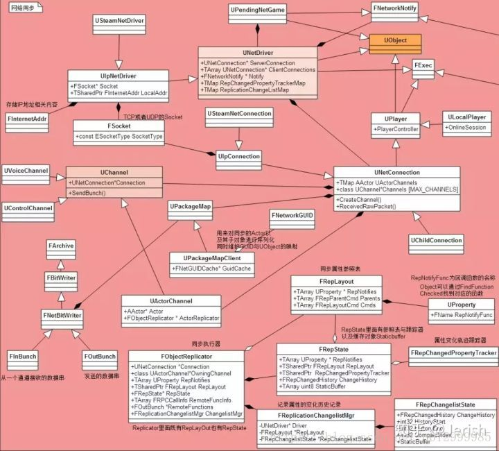

如何将源代码学好？
画出整个程序的流程图，理解整个程序流程的思想。画流程图的方式更让人很直接 的理解程序的整体流程，而不会被代码所干扰，让程序员总体上把握整个程序。
对流程各节点(函数或过程)的理解。流程的每一节点是构成整个流程的不可缺少的部份。
再把流程和流程各节点串起来理解整个程序，可能的话最好写出读书笔记。
如果想深刻的学习到源代码的精髓所在，请写一个相近的程序进行操练。当你理解了这个程序并不表明你掌握了这个程序，只有在你操练一个相近的程序时，你才知道你到底理解了多少，掌握了多少。
其实源代码的学习这是一个从整体到不断细化的过程，是一个极为繁琐的过程同时也是一个不断认清事物本原的过程。
很多程序员(包括我自己)在相当长的时间内,过份注重程序代码的细节部份，而忽略了程序的有机整体，这不能不说是一种悲哀。
特别是软件大工业时代的现在，由于项目的庞大，整个项目被人为的分割成七零八落的几个独立小块 (这就更须要有人对整个项目的统领),程序员在这几个小块中各自为战，堕落自己的思维，限制在狭小的空间中还自得其乐。整个一井底之蛙。
但是我们也要看到，现在有越来越多的程序员潜意识里明白了这个缺陷，正在不断的改进。
其实我真正想说的是，大凡世事纷繁复杂，但道理却殊途同归，这才是万法归一的理解。
学习步骤（简化版）
- 决定要学习的模块，查找官方文档、相关的总结文章，整理出大概的学习内容与目标
- 运行程序，观察表现
- 运行源码，断点调试，从头跟一边源码的执行流程，注意函数堆栈
- 画类图、流程图，先把遇到的重要类记录下来，表明各个类的关系
- 记录问题，把不理解的类或者内容以问题的方式记录下来
- 写文章、笔记，尝试逐个解决之前遗留的问题
学习步骤（详细版）
查找官方文档、相关的总结文章 比如说我想研究网络模块，首先去官方文档、论坛、wiki里面过一遍网络相关的所有内容，这时候遇到不懂的问题尽可能解决，解决不了的就把问题记下来，先去官方文档看我觉得是非常有必要的，因为这里的文章是最权威的，错误率非常低。然后，去Google、百度搜索相关的文章与帖子，同时可以加入一些技术qq群（有一些水群果断退了就行，保留一些优质的交流群），过一遍这些文章和资料。目前能看到比较好的技术网站大体上就是各个技术对应的官方网站（论坛）、StackOverflow、知乎、博客园、简书、CSDN、一些个人网站等，当然有些网站复制粘贴现象严重，需要自己筛选。建议能找到原文链接的尽量去原文里面看，因为你有可能从原创作者那里看到更多优秀的文章。
在运行程序的时候，我们需要调整各种参数来执行不同的情况，进而观察其表现效果来验证我们的猜想与结论。 比如说，对于一个处于休眠状态的Actor属性是否能正常同步，如果客户端属性与服务器一样是否还会执行回调函数等。执行程序可以快速的得到结论，然后根据结论我们可以更快速准确的进行分析。为了提高效率，最好在一开始就设置不同的配置、GM等来在项目运行时动态改变运行内容，因为大型项目一般都是编译型语言，我们可能可能需要频繁的修改代码编译再重新运行。
调试可以说是最为关键的一步了，80%的细节需要你在调试中去理解函数什么时候执行到这里（函数断点）？每一步每一个属性值是多少？属性值什么时候发生变化（条件断点）？一个完整的执行流程是什么样的（函数堆栈）？这些问题需要你一点一点的进行跟踪调试，最后再去解决。
画图的习惯可能很多人没有，但是我个人觉得这是一个必不可少的环节，因为他可以大幅度提高你对框架理解的速度对于任何一个复杂的项目，每一个模块都会牵扯到大量的类（排除纯C项目），类的关系错综复杂，而且为了降低耦合还可能用到各种设计模式，这些都大大提高了代码的阅读难度，很有可能你看了3、4个类之后就完全搞混了他们都是干什么的。举例来说，我在看UE4属性同步模块的时候，完全被各个类之间的关系搞蒙了，所以我看到一个类就把他的类图画下来，看到相关的类就记录他们的关系，最后得到了下面这样一个简化的类图。经过梳理后，几句话我就可以概括他们之间的关系。当然，除了类图以外，还有流程图、时序图，甚至是你自己为了方便发明的“模块关系图”，这时候图的种类与规范其实没有那么重要，只要能帮助你理解就行。个人推荐使用 ProcessOn 或者是 EdrawMax 。前者是在线多人协作比较方便，后者是软件制作更注重美观。
记录的问题有两种：别人给你的问题以及你自己给自己的问题别人给你的问题 别人给你的问题：你在阅读的时候不可能一帆风顺，可能在第一步的时候，就已经遇到了无数的问题。这时候不要着急，按照重要程度顺序依次解决，简单的问题直接网上搜一搜，解决不了可以找身边的大神，网上的牛人解决。如果还是不行，就把问题记下来，然后继续学习，当你深入到一定程度的时候，你的问题可能就不攻自破了。 自己给自己的问题：当你解决了别人给你的问题后，你应该已经理解了一大半了。不过，任何人写的文章都不可能覆盖到全部，你需要自己挖掘更多更深的问题，然后自己再去解答，这样你才能做到比别人了解的更多，更能体现出你自己的价值。
写文章和写笔记是有区别的，但是都很有意义 写文章这件事相比上面的步骤我觉得不算是必须的，这个适合那些追求完美还能挤出时间的人。你写的东西是要给别人看的，所以你的目的是给别人讲清楚。我在写文章的时候会去考虑这个东西我说的真的对么，有没有把握，考虑的是否全面。在这种自我拷问下，我会尽可能的完善我的知识体系，修改文章中那些看起来不够准确的内容。如果最后能做到给读者讲清楚的话，那你是真的会了。 写笔记相比写文章要轻松很多，我只是把我总结的内容，学习的收获记录下来，不需要考虑太多的东西。虽然没有写文章那么追求完美，但是这个过程中我们可能也会多了很多思考，在之后的学习过程中快速的回忆起自己学习的经验。
最后，我再强调一点，如果只是为了使用好一个工具，你不需要彻彻底底的理解所有内容，因为你的时间是有限的。如果你真的是抱着学习的态度去研究源码细节，那请做好花费大量时间的准备并坚持下去。